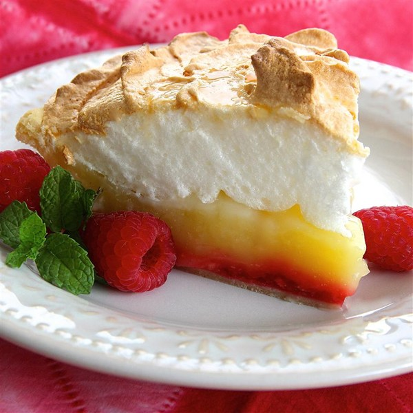

Raspberry Lemon Meringue Pie
"Added additional lemon and raspberries to this classic and delicious lemon meringue pie, giving it a less-sweet and brighter flavor. Sometimes I don't make the meringue, I just cool the lemon filling for 3 hours and garnish with a dollop of whipped cream and a raspberry at serving time."